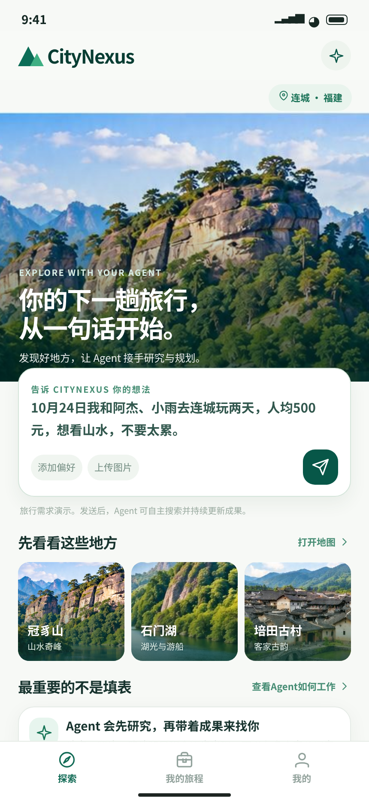
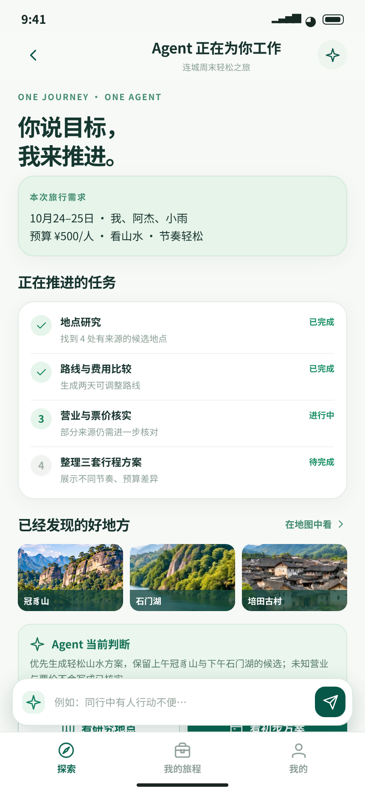
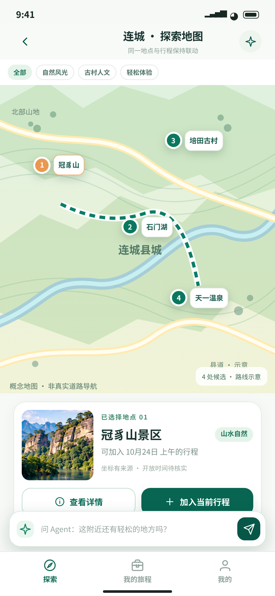
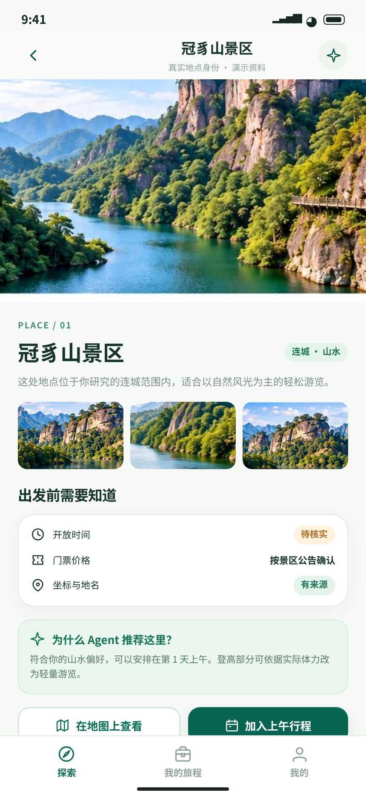
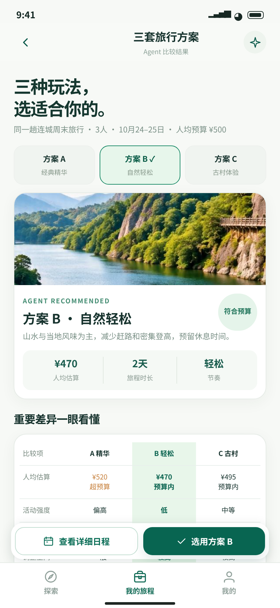
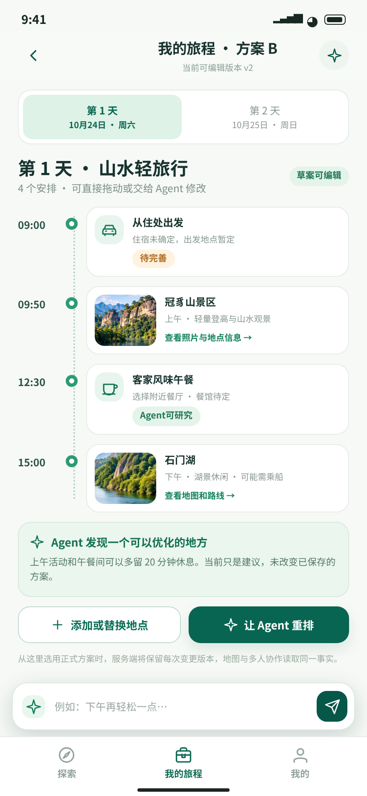
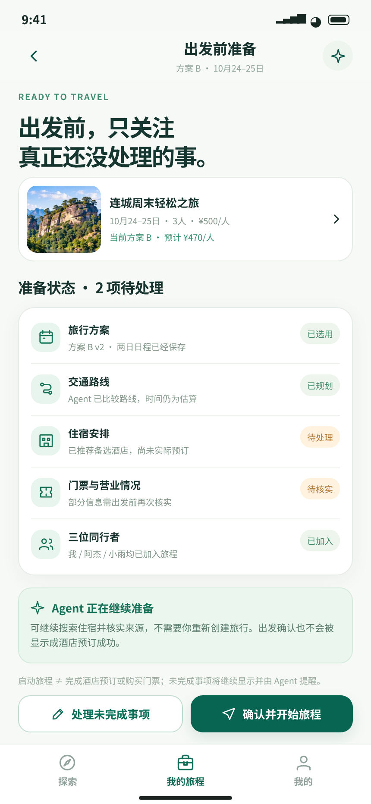
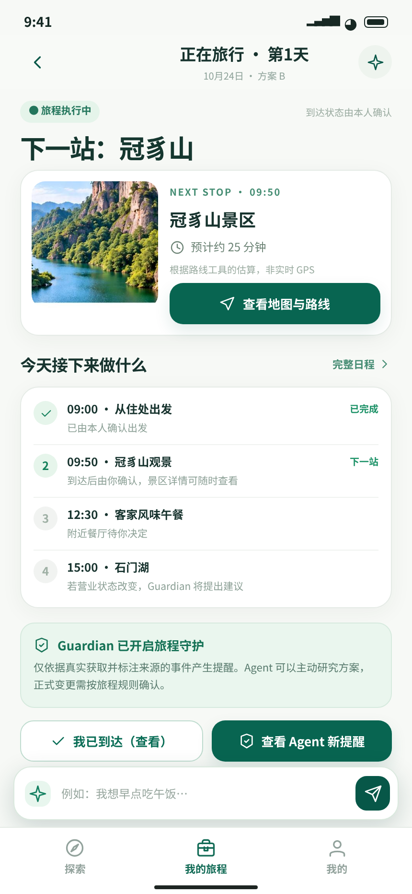
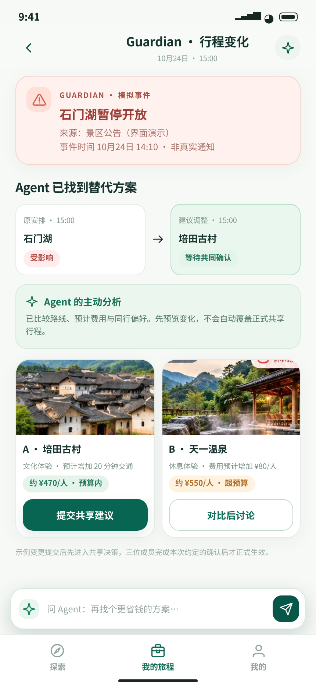
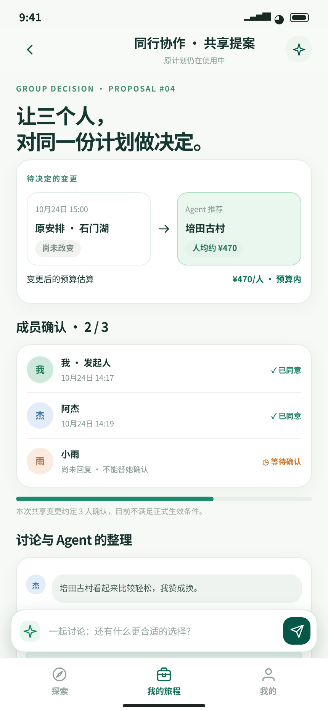

CITYNEXUS · REVOLUTION LAB · VISUAL SYSTEM V3
十张独立的旅行 Agent UI
2026年10月24–25日连城两日游：同一 Journey、同一位 Agent、同一套地点/日程/成员状态。点击任意截图查看完整高清图，或打开页面式布局参考。
设计稿与照片、地图、营业/门票/导航、Guardian 事件均为概念示意，非实时服务回执。UI 的定位是指导产品结构与操作逻辑，不是运行验收。

















